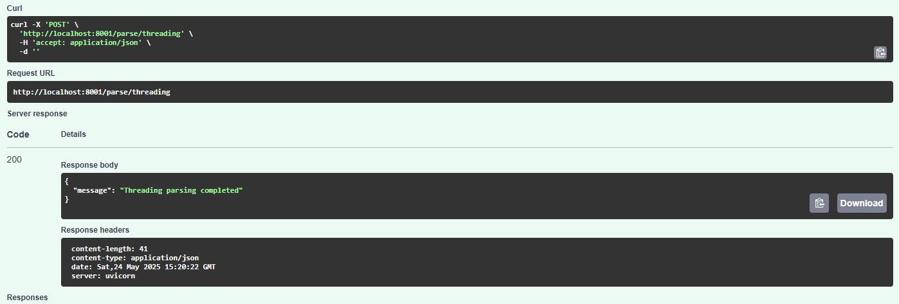
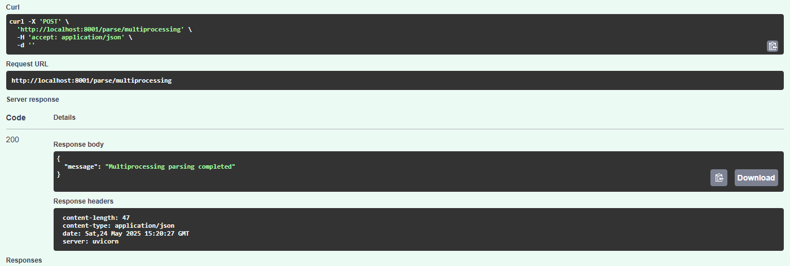
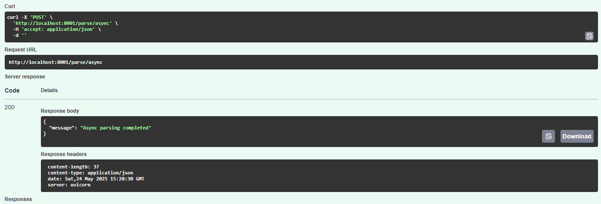
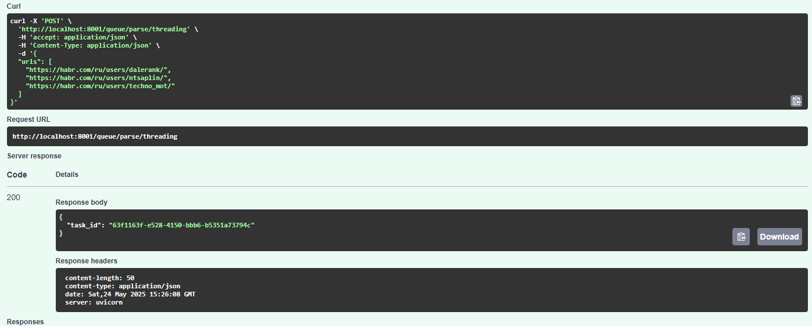
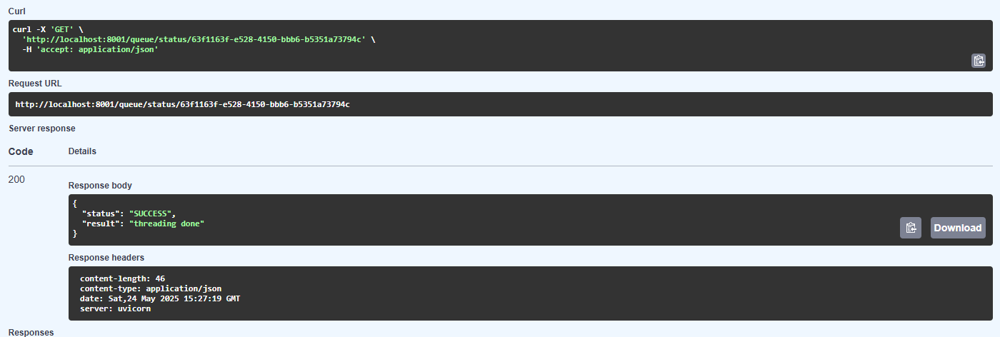

Лабораторная работа 3: Упаковка FastAPI приложения в Docker, Работа с источниками данных и Очереди
Цель
Научиться упаковывать FastAPI приложение в Docker, интегрировать парсер данных с базой данных и вызывать парсер через API и очередь.
Подзадача 1: Упаковка FastAPI приложения, базы данных и парсера данных в Docker
Dockerfile для app
FROM python:3.13-slim
WORKDIR /usr/src/app
COPY requirements.txt ./
RUN pip install --no-cache-dir -r requirements.txt
COPY . .
EXPOSE 8000
CMD ["uvicorn", "main:app", "--host", "0.0.0.0", "--port", "8000"]
Dockerfile для parser
FROM python:3.13-slim
WORKDIR /parser
COPY requirements.txt ./
RUN pip install --no-cache-dir -r requirements.txt
COPY . .
EXPOSE 8001
CMD ["uvicorn", "main:app", "--host", "0.0.0.0", "--port", "8001"]
docker-compose.yml
services:
db:
image: postgres:15
restart: always
environment:
POSTGRES_USER: postgres
POSTGRES_PASSWORD: 123123
POSTGRES_DB: finance_db
ports:
- '5432:5432'
volumes:
- postgres_data:/var/lib/postgresql/data
app:
build:
context: ./app
dockerfile: Dockerfile
container_name: fastapi_app
ports:
- '8000:8000'
depends_on:
- db
- redis
env_file:
- ./app/.env
parser:
build:
context: ./parser
dockerfile: Dockerfile
container_name: parser_service
ports:
- '8001:8001'
depends_on:
- db
- redis
env_file:
- ./parser/.env
redis:
image: redis:7
container_name: redis
ports:
- "6379:6379"
celery_worker:
build:
context: ./parser
container_name: celery_worker
command: celery -A celery_app.celery_app worker --loglevel=info
depends_on:
- redis
- db
env_file:
- ./parser/.env
volumes:
postgres_data:
Подзадача 2: Вызов парсера из FastAPI
Эндпоинт в parser/main.py
from fastapi import FastAPI, HTTPException
from pydantic import BaseModel
from async_parse import main as async_parse
from connection import init_db
from multiprocessing_parse import main as multiprocessing_parse
from celery_app import celery_app
from tasks import parse_async_task, parse_mp_task, parse_threading_task
from threading_parse import main as threading_parse
app = FastAPI()
URLS = [
"https://habr.com/ru/users/dalerank/",
"https://habr.com/ru/users/ntsaplin/",
"https://habr.com/ru/users/techno_mot/"
]
@app.on_event("startup")
def startup_event():
init_db()
@app.post("/parse/threading")
def parse_threading():
try:
threading_parse(URLS)
return {"message": "Threading parsing completed"}
except Exception as e:
raise HTTPException(status_code = 500, detail = str(e))
@app.post("/parse/multiprocessing")
def parse_multiprocessing():
try:
multiprocessing_parse(URLS)
return {"message": "Multiprocessing parsing completed"}
except Exception as e:
raise HTTPException(status_code = 500, detail = str(e))
@app.post("/parse/async")
async def parse_async():
try:
await async_parse(URLS)
return {"message": "Async parsing completed"}
except Exception as e:
raise HTTPException(status_code = 500, detail = str(e))



Подзадача 3: Вызов парсера из FastAPI через очередь
Конфигурация Celery (parser/celery_app.py)
import os
from celery import Celery
from dotenv import load_dotenv
load_dotenv(dotenv_path = "parser/.env")
CELERY_BROKER_URL = os.getenv("CELERY_BROKER_URL")
CELERY_RESULT_BACKEND = os.getenv("CELERY_RESULT_BACKEND")
celery_app = Celery(
"parser_tasks",
broker = CELERY_BROKER_URL,
backend = CELERY_RESULT_BACKEND,
include=["tasks"]
)
Задачи (parser/tasks.py)
from async_parse import main as async_main
from celery_app import celery_app
from multiprocessing_parse import main as mp_main
from threading_parse import main as threading_main
@celery_app.task(name = "parser.threading")
def parse_threading_task(urls):
threading_main(urls)
return "threading done"
@celery_app.task(name = "parser.multiprocessing")
def parse_mp_task(urls):
mp_main(urls)
return "multiprocessing done"
@celery_app.task(name = "parser.async")
def parse_async_task(urls):
import asyncio
return asyncio.run(async_main(urls))
Эндпоинты очереди (parser/main.py)
from fastapi import FastAPI, HTTPException
from pydantic import BaseModel
from async_parse import main as async_parse
from connection import init_db
from multiprocessing_parse import main as multiprocessing_parse
from celery_app import celery_app
from tasks import parse_async_task, parse_mp_task, parse_threading_task
from threading_parse import main as threading_parse
app = FastAPI()
class ParseRequest(BaseModel):
urls: list[str]
@app.post("/queue/parse/threading")
def queue_threading(request: ParseRequest):
task = parse_threading_task.delay(request.urls)
return {"task_id": task.id}
@app.post("/queue/parse/multiprocessing")
def queue_mp(request: ParseRequest):
task = parse_mp_task.delay(request.urls)
return {"task_id": task.id}
@app.post("/queue/parse/async")
def queue_async(request: ParseRequest):
task = parse_async_task.delay(request.urls)
return {"task_id": task.id}
@app.get("/queue/status/{task_id}")
def get_status(task_id: str):
res = celery_app.AsyncResult(task_id)
return {"status": res.status, "result": res.result}

